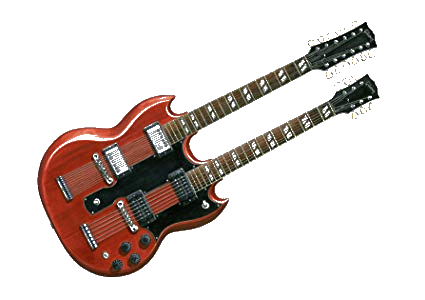
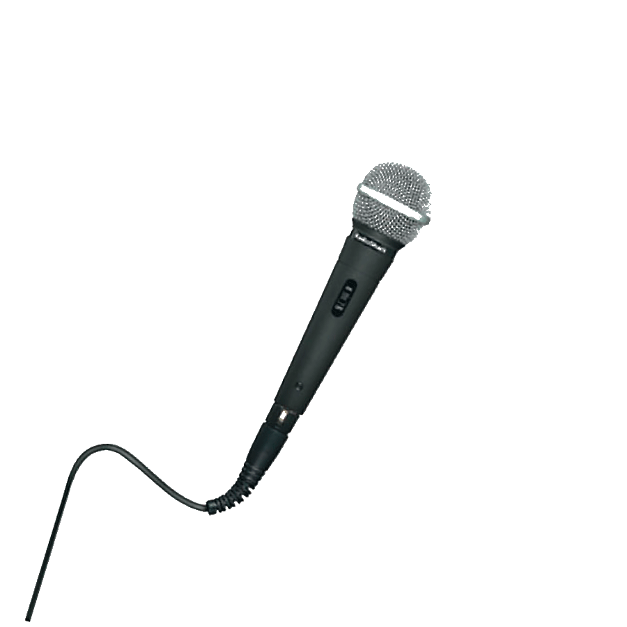
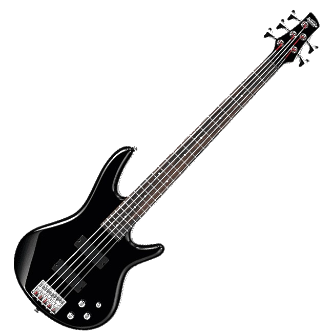
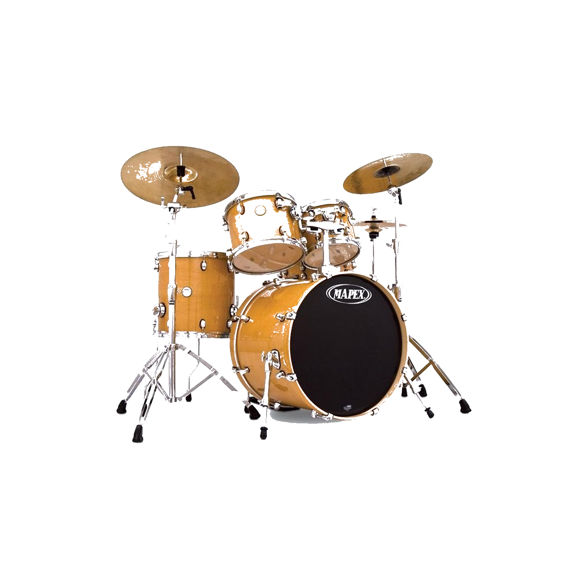

|
Led Zeppelin fue un grupo británico de hard rock fundado en 1968 por el guitarrista Jimmy Page, quien había pertenecido a The Yardbirds.
La banda estuvo integrada por John Paul Jones como bajista y teclista, el vocalista Robert Plant y John Bonham a la batería (que había coincidido con Plant en The Band of Joy).
Led Zeppelin presentó elementos de un amplio espectro de influencias, como el blues, el rock and roll, el soul, la música celta, la música india, el folk, e incluso el country.
Más de treinta años después de la disgregación de la banda en 1980, la música de Led Zeppelin continúa vendiéndose,
disfruta de una amplia difusión radiofónica, y ha demostrado ser una de las bandas más influyentes en la música rock.
Hasta la fecha, ha vendido más de 300 millones de álbumes en el mundo, incluidos 111 millones sólo en los Estados Unidos,
y es la segunda banda con más discos de diamante (otorgados cada diez millones de ventas en EE. UU.)
de la historia de la música, sólo por detrás de The Beatles. Los discos con esta certificación son:
Led Zeppelin IV (23 millones), Physical Graffiti (15 millones), Led Zeppelin II (12 millones), Houses of the Holy (11 millones) y Box Set (10 millones).
En 2004, la revista Rolling Stone los clasificó en el número 14 en su lista de los «100 artistas más grandes de todos los tiempos».
|
|
|
Miembros
- Jimmy Page:  James Patrick «Jimmy» Page (Heston, Middlesex, Inglaterra, 9 de enero de 1944) es un músico multiinstrumentista y un virtuoso guitarrista de rock clásico británico.
Fundador del grupo Led Zeppelin desde 1968 hasta su disolución en 1980, considerado uno de los más grandes, influyentes y versátiles músicos y guitarristas de todos los tiempos.
Ha sido músico de sesión y guitarrista de Led Zeppelin, banda con la que vendió más de trescientos millones de discos, y The Firm.
Además, ha colaborado, en calidad de músico de sesión, con multitud de formaciones y autores, entre los que destacan The Rolling Stones,
The Who, The Kinks, Eric Clapton o Jeff Beck. Grabó álbumes con artistas como David Coverdale, Roy Harper o Joe Cocker.
Está posicionado en el segundo lugar entre los mejores guitarristas de todos los tiempos por la Gibson Guitar Corporation.
Por su parte, la revista Rolling Stone lo ubicó en el tercer puesto.
Su solo de guitarra en Stairway to heaven esta considerado como el mejor en la historia del rock para Rolling Stone y Guitar World.
Ganador de dos Premios Grammy, Page tiene el honor de haber sido incluido dos veces al Salón de la Fama del Rock and roll.
En 1992 lo hizo como miembro de los Yardbirds, mientras que en 1995 lo hizo con Led Zeppelin.
En 2005, fue galardonado como miembro de la Orden del Imperio Británico por su labor de caridad en ayuda de las personas más desfavorecidas de Brasil.
- Robert Plant:  Robert Anthony Plant (West Bromwich, Inglaterra, 20 de agosto de 1948) es un músico, compositor y productor inglés,
conocido mayormente por haber sido cantante de la banda de rock Led Zeppelin desde su fundación hasta su separación en 1980.
Influido por varios artistas estadounidenses de blues y rock and roll, a principios de los años 1960 comenzó su carrera como vocalista en algunas bandas inglesas,
en las que además tocaba ocasionalmente la guitarra y la armónica. En 1968 fue uno de los miembros fundadores de Led Zeppelin,
en la que grabó ocho álbumes de estudio hasta 1980 y un disco póstumo publicado en 1982. Gracias a su presencia escénica y vestimenta creó una de las imágenes más icónicas de la historia del rock
y debido a su particular estilo vocal es considerado por la Enciclopedia Británica como el creador del sonido que definió la voz del hard rock y heavy metal.
En 1975 sufrió un grave accidente automovilístico junto a su familia y dos años después murió repentinamente su hijo Karac de cinco años de edad,
hechos que redujeron considerablemente las actividades de la banda en la segunda parte de los setenta.
Luego de la publicación de In Through the Out Door en 1979 y un par de presentaciones al año siguiente,
la agrupación oficializó su separación el 4 de diciembre de 1980 tras el fallecimiento del baterista John Bonham acontecido casi tres meses antes.
En 1982 inició su carrera solista con la publicación de Pictures at Eleven, que alcanzó el puesto 2 en la lista de álbumes del Reino Unido. Desde entonces y hasta 1993,
publicó otros cinco álbumes de estudio con un sonido orientado principalmente al rock y al hard rock.
A mediados de ese mismo año creó el dúo Page & Plant, junto a su amigo y guitarrista Jimmy Page, con la cual publicó el disco en vivo No Quarter (1994) y el de estudio Walking into Clarksdale (1998).
A fines de la década y hasta principios de 2001 se alejó de los grandes escenarios para sentir el impulso más íntimo de la música,
realizando conciertos en pequeños clubes con la agrupación Priory of Brion.
Más tarde, regresó a la escena internacional con su nueva banda de apoyo Strange Sensation
con la que grabó los discos Dreamland (2002) y Mighty ReArranger (2005), y en 2007 grabó Raising Sand con la cantante bluegrass-country Alison Krauss,
con la que ganó los seis premios Grammy a los que fue nominado. Posteriormente, publicó tres producciones con dos bandas diferentes;
Band of Joy (2010) con el grupo homónimo, y Lullaby and...The Ceaseless Roar (2014) y Carry Fire (2017) con The Sensational Space Shifters.
Robert Plant, mediáticamente conocido como The Golden God, es considerado como uno de los músicos más importantes e influyentes de la historia.
Al respecto, es incluido habitualmente en las listas de los mejores cantantes, como por ejemplo en 2006,
la revista Hit Parader lo situó en el primer puesto de los 100 mejores vocalistas del metal de todos los tiempos;
Rolling Stone lo posicionó en el lugar 15 de los 100 grandes cantantes de todos los tiempos;
la revista Q lo consideró como uno de los artistas del siglo y la organización radial NPR lo nombró como una de las 50 grandes voces en el mundo.
- John Baldwin:  (Sidcup, Inglaterra, 3 de enero de 1946), más conocido como John Paul Jones,
es un músico multinstrumentista y compositor británico, reconocido principalmente por haber sido bajista del grupo Led Zeppelin.
En 1960, con catorce años, formó parte del grupo de danza de su padre, Joe Baldwin, y un año más tarde creó su propia banda.
En los años 60 comenzó a ser director y arreglista de otros grupos, así como pianista y bajista, incluyendo entre estos a los Outlaws,
Mickey Most, the Mindbenders, the Everly Brothers, The Supremes, Rolling Stones, Jeff Beck, Donovan, entre otros.
Se destaca también su gran habilidad como pianista y teclista.
- John Henry «Bonzo» Bonham:  (Redditch, 31 de mayo de 1948-Clewer, 25 de septiembre de 1980),
fue el baterista del grupo de rock Led Zeppelin.
Es considerado uno de los mejores bateristas de rock de toda la historia, ya que cambió el enfoque que se tenía del instrumento.
Creó un estilo que consistía en una pegada más dura y con menos adornos, mucho más alejado del jazz y del blues
(estilos predominantes en los bateristas de rock/pop de la época),
influyendo poderosamente a todas las generaciones posteriores de baterías de rock, incluyendo al heavy metal.
Bonham murió en la mansión de Jimmy Page en Clewer, Windsor, el 25 de septiembre de 1980 por aspiración de vómito a los 32 años de edad.
Después de su fallecimiento, el resto de la banda decidió separarse, pues lo consideraban irremplazable.
La revista musical Gigwise incluyó a Bonham en la primera posición en su Lista de los 50 mejores bateristas de la historia.
|
|